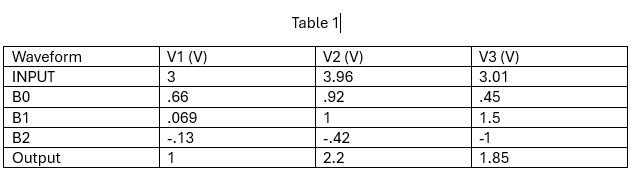
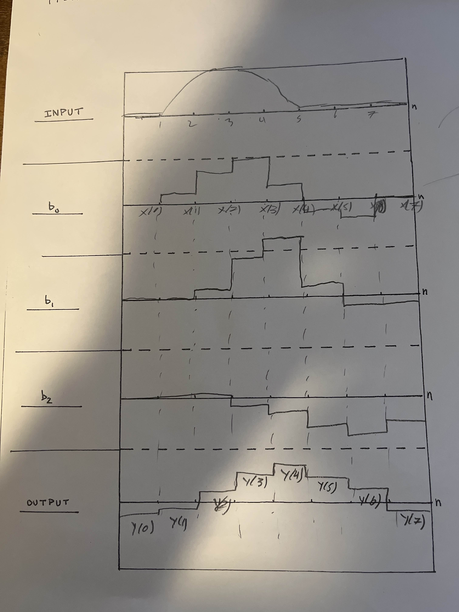

In this lab, the objective is to follow up ont he first week of convolutions and anylzing the operation further.
1) Explain in detail the output of the system in Figures 1 and 2.
The output of the system in the figures is the addition of all three input signals on top of each other.
2) What electrical circuit component creates the presence of ‘delayed energy’?
The component that creates this presence of delayed energy is etiher a capacitor or an inductor as they both hold charge through differnt means.
3) Explain the superposition sum in your lab notebook in your own words
When adding two signals together that result in a new signal 'x'. If a filter is applied to that signal, the output of that would be the same as applying the same filter to both input signals.
4) Based on your findings from Week 1, explain what you would expect the system output to be if the input was four pulses back to back instead of one or two?
Based on the prior week, I would assume that the output of the sum would be split into more parts instead of just two, specifcally four.
5) How could you adjust the current TIMS setup to simulate this?
In order to get the TIMS unit to emulate this behavior, you would need to adjust the frequency to half of what it was before.
6)

Error y[0] = .4 V
Error y[1] = .7 V
Error y[2] = .9 V
7) Write equations for y[1], y[2], and y[6]
y[1] =h[0] · x[1] + h[1] · x[6] + h[2] · x[5]
y[2] =h[0] · x[2] + h[1] · x[1] + h[2] · x[6]
y[6] =h[0] · x[6] + h[1] · x[5] + h[2] · x[4]
Signal Handout

What did you enjoy about this lab?
I found the idea of convolution to be interesting and I enjoyed the hands on aspect of the lab
What didn’t go well in this lab?
I found the lab to be a bit confusing at times, especially the first week, but I was able to get through it
How would you improve the lab experiment for future classes?
I would suggest maybe having a bit more guidance on the first week of the lab as it was a bit confusing